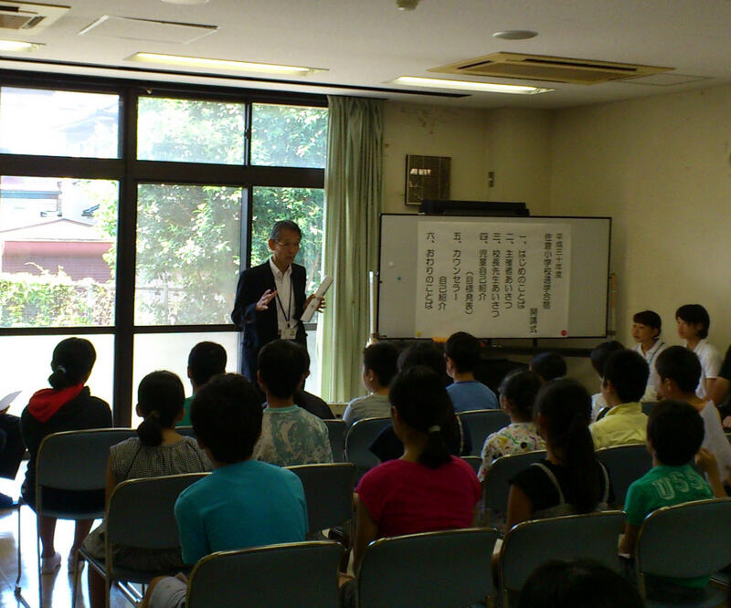

文字
背景
行間


カテゴリ:その他
小寒
 今年の１月６日は「小寒」で「寒の入り」となります。寒（かん）とは、暦の上で寒さが最も厳しいとされる期間のことで小寒から立春の日の前日までの約30日間を言います。また、小寒とは、「しょうかん」と読み、二十四節気（にじゅうしせっき）の第23節目です。小寒は、太陽暦の1月6日ごろに始り、大寒（1月20日ごろ）の前日までの約15日間、またはこの期間の第1日目を指します。
今年の１月６日は「小寒」で「寒の入り」となります。寒（かん）とは、暦の上で寒さが最も厳しいとされる期間のことで小寒から立春の日の前日までの約30日間を言います。また、小寒とは、「しょうかん」と読み、二十四節気（にじゅうしせっき）の第23節目です。小寒は、太陽暦の1月6日ごろに始り、大寒（1月20日ごろ）の前日までの約15日間、またはこの期間の第1日目を指します。また、今日は3年ぶり（前回は2016年3月9日）の部分日食で、全国で天候が良ければ観測できます。今年は部分日食の観測の機会が2回あるそうで、２回目は12月26日だそうです。東京近辺では１０：０６くらいが食の最大になります。（部分日食についてや安全な観測の仕方について詳しくは国立天文台のWebページでご確認ください。）
左の写真は、部分日食を撮ろうとレンズにフィルターを付けて、外で９：００から雲の切れ間を狙っていたところ、９：４５に雲が偶然切れた瞬間に撮れたものです。
明日から学校が始まります。お正月の間に養った鋭気で、皆で目標の実現に向けて、健やかに、朗らかにいきましょう。
初詣（合格祈願）


 昨日、今日と風もなく、暖かな日差しに恵まれ初詣にはとても良い天気になりました。私は、昨日は地元や県内の神社仏閣にお参りをし、今日はちょっと足を延ばして、東京の湯島天満宮（湯島天神）に佐倉高校の受験生の合格祈願に行ってきました。本殿にあがって合格祈願ができて良かったです。さすがに日本有数の天神様だけあって、多くの参拝者で賑わってました。受験生の皆さんは、試験で実力を発揮できるように健康に気を付けて頑張ってください。
昨日、今日と風もなく、暖かな日差しに恵まれ初詣にはとても良い天気になりました。私は、昨日は地元や県内の神社仏閣にお参りをし、今日はちょっと足を延ばして、東京の湯島天満宮（湯島天神）に佐倉高校の受験生の合格祈願に行ってきました。本殿にあがって合格祈願ができて良かったです。さすがに日本有数の天神様だけあって、多くの参拝者で賑わってました。受験生の皆さんは、試験で実力を発揮できるように健康に気を付けて頑張ってください。 謹賀新年（平成31年元旦）
 新年あけましておめでとうございます。今年もどうそよろしくお願いいたします。今年は平成31 己亥（つちのと・い）年です。しっかりと力をつけて次のステージに向けて頑張っていきましょう。
新年あけましておめでとうございます。今年もどうそよろしくお願いいたします。今年は平成31 己亥（つちのと・い）年です。しっかりと力をつけて次のステージに向けて頑張っていきましょう。 冬至
２０１８年12月22日の今日は、二十四節気の「冬至」の初日にも当たり、昼の時間が一年で一番短い日です。言い換えると夏至以来北半球から遠ざかり続けた太陽が南回帰線を折り返して、北半球に再び帰ってくる日です。この日を易では、陰暦10月に陰がきわまって11月の冬至に陽が初めて生じることから一陽来復(陽気が復活する時)としています。ですから、冬至にはいろいろな風習が受け継がれています。たとえば、「かぼちゃ」を食べるとか。 むかしは、作物が取れなくなる冬のこの時期に保存が利くかぼちゃはとても貴重でした。また、かぼちゃは栄養価が高く、食べれば身体が温まることを昔の人は経験から知っていました。厳しい冬を健康に乗り切れるように願いを込めてこの日にかぼちゃを食していたのでしょう。他にもいろいろ冬至に食べるといいとされる食べ物があります。だいこん、れんこん、にんじん、ぎんなん、かんてんなど「ん」がつくものなど、これらの食べ物は語呂がよく縁起のいい食べ物として取り入れられてきました。食物以外でも、「ゆず湯」につかり風邪予防するなどの風習がありますよね。いずれにしても、これら先人から受け継がれてきた知恵も活用して、みんなで、この冬を乗り切って明るい春を迎えましょう。
21世紀枠への感謝
先週14日金曜日に来春の第91回センバツ高校野球大会に出場する21世紀枠の各地区候補９校が発表されました。千葉県が所属する関東・東京地区からは、石岡一（茨城県）が選出されました。今回、本校は選外となりましたが、千葉県の代表として推薦していただいたこと、また、本件についてご支援・ご声援いただいた皆様に改めて感謝申し上げます。
15日付けのスポーツ報知の紙面でもこの件に関して記事が掲載されました。そこには、野球部の和田宗矩主将から「自分たちが活躍することで、長嶋さんに元気になってもらいたい。甲子園に出て、長嶋さんに応援に来ていただきたいです。」との来夏の目標に対するコメントが載せられていました。本校生徒が様々な目標を立てる上で、人のため社会のためになることを意識して自分の目標をしっかりと持っていることに頼もしさと誇りを感じました。皆さんと夢の実現に向けてひとつひとつ頑張っていきたいと思います。
15日付けのスポーツ報知の紙面でもこの件に関して記事が掲載されました。そこには、野球部の和田宗矩主将から「自分たちが活躍することで、長嶋さんに元気になってもらいたい。甲子園に出て、長嶋さんに応援に来ていただきたいです。」との来夏の目標に対するコメントが載せられていました。本校生徒が様々な目標を立てる上で、人のため社会のためになることを意識して自分の目標をしっかりと持っていることに頼もしさと誇りを感じました。皆さんと夢の実現に向けてひとつひとつ頑張っていきたいと思います。
気持ちの良い朝
久しぶりに晴れて気持ちの良い朝を迎えました。昨日のニュースでも南関東では日照不足が心配されています。日光や紫外線は、心や身体の健康管理にとても大切です。例えば、感情のバランスを調整する働きや体内時計の調整の働き持つ神経伝達物質のセロトニンや血中のカルシウム代謝を正常化させる働きを持つビタミンDの生成などに密接な関係があります。今日のように朝日を浴びて気持ち良いと感じるのもこんなことにも関係しているのかもしれませんね。


星に願いを2018
今年も「三大流星群」の一つの「ふたご座流星群」を観察できる時期になっています。国立天文台によると、特に多くの流星を見ることができるのは、今日13日の夜と14日の夜の２夜で、今年のふたご座流星群の活動が最も活発になるのは、12月14日21時頃と予想されています。天気予報では13日、14日とも夜は晴れで観察には大変良いようです。観察には月明りが気になりますが月が上弦のため夜半頃には沈み（千葉県では13日が21:40、14日が22:36）、その後はたいへん良い条件で流星を観察することができるでしょう。いずれの夜も、20時頃から流星が出現し始め、夜明け前まで出現が続くそうです。空の暗い場所で観察したときに見える流星の数は、最も多いときで1時間あたり40個程度と予想されるということです。楽しみですね。
さて、あなたは流れ星に何を願いますか。
さて、あなたは流れ星に何を願いますか。
通学合宿
本校のセミナーハウス「学思館」を宿泊場所として、小学校の4年生から6年生の子どもたちによる「通学合宿」が本日から3泊4日で実施されます。佐倉市立中央公民館が、今年度は佐倉小学校の対象となる学年の希望児童を集めて実施するもので、子どもたちは親元を離れ、団体生活の中で日常生活の基本を自分自身で行いながら学校に通うというものです。この通学合宿の開講式が本日行われました。合宿に参加した児童の皆さん、合宿期間中に、皆さんのために、本校のESSの生徒がイベントを企画していますので楽しみしていてください。
なお、この「通学合宿」は千葉県教育委員会で推進していて千葉県各地で行われいるます。子どもたちの社会性、自主性、協調性を伸ばし、「生きる力」を育むことが期待される取り組みです。
なお、この「通学合宿」は千葉県教育委員会で推進していて千葉県各地で行われいるます。子どもたちの社会性、自主性、協調性を伸ばし、「生きる力」を育むことが期待される取り組みです。
県立移管120周年記念に向けて
7月28日（土）に台風が接近するなか、午前中に鹿山会役員会が、午後に120周年記念事業実行委員会の会議が行われました。どちらも、大きな議題は120周年記念事業に関しての情報共有と取り組み状況の確認（特に来年11月9日に行われる記念式典や記念誌発行について現在までの準備状況など）を中心に課題の洗い出しとそれらへの対応方法等について話し合われました。120周年記念事業は、学校にとって大きな節目となるとても大切な事業です。これから準備について本格的に動きだすこととなりますので、PTA・鹿山会の皆様には、ご支援、ご協力のほどよろしくお願いいたします。
佐倉学特別講演会
佐倉市教育委員会の佐倉学特別講演会が本日１５：００から佐倉市中央公民館でおこなわれ、生徒とともに参加させていただきました。今回の講演の講師は、２０１５年ノーベル生理学・医学賞を受賞された北里大学特別栄誉教授の大村智先生でした。「私の歩んできた道」というテーマでご講演をいただきました。先生は、天然物有機化学の世界的権威でいらっしゃいます。今までに、５００種の新規化合物を発見し、２６種は、医薬、動物薬、農業用薬剤などとして世界中で使われているそうです。なかでも、抗寄生虫薬イベルメクチンは熱帯病のオンコルセカ症やリンパ系フィラリア症の予防・治療薬として、また、沖縄地方に多く罹患者のいる糞線虫症や今まで良い治療法の無かった疥癬の治療薬として使われており、年間３億人の方が救われているそうです。先生は幼いころより、おばあさまから「人のためになることをやりなさい」と教育を受けて育ってきたそうです。このことが先生の人生感の根底にあり、研究においても世の役に立つ天然有機化合物の発見を目指して独創的な研究を推進してこられました。研究者として早い段階から海外を意識して論文を書かれるなど、ご本人の弛まぬ努力が常に良き人との出会いにつながり先生を成長させてくれたそうです。そして、先生自身も人材育成を大切にしながら研究を進めてこられたそうです。その先生が、道元禅師の「正師を得ざれば学ばざるに如かず」という言葉や教師であった先生のお母様の日記帳に書かれた言葉「教師の資格は自分自身が絶えず進歩していること」や、先生ご自身が好きな言葉として「実践躬行」（じっせんきゅうこう 理論や信条をそのとおり自分自身で実際に行う）を大切にされていたことが教師としての私にはとても印象的でした。先生のお話は多くの示唆が含まれていながら大変わかりやすく、かつユーモアに富んだお話でアッという間に講演時間が過ぎてしまいました。今日参加した生徒たちも多くのことを得られたのではないでしょうか。先生ありがとうございます。また、このような貴重な機会を与えてくださった佐倉市教育委員会へあらためて感謝申し上げます。
千葉県で震度５弱
本日は、本来なら七夕の話題なのでしょうが、皆さんご存知の通り、７日午後８時２３分ごろ、関東地方で強い地震が発生しました。気象庁によると、千葉県北東部で震度５弱が観測されたそうです。震源地は千葉県東方沖。震源の深さ66㎞で、マグニチュードは6.0と推定されています。この地震による津波の心配はないということでした。私はその時間千葉市にいて、携帯電話に一斉に地震を告げる緊急地震速報が鳴り響いた矢先に結構な揺れを感じました。皆さんの地域は大丈夫でしたか。被災されてないことを祈ります。
その後、JR千葉駅に着いても、電車が安全点検のため各駅に停まっていて、動き始めても結局、家に帰れたのが22時過ぎとなり通常より1時間30分ほど帰宅にかかる時間が多くなりました。西日本・中部地方で過去になかったほどの大雨による災害が起こっており、天災に対する備えの重要さをあらためて実感したところです。
その後、JR千葉駅に着いても、電車が安全点検のため各駅に停まっていて、動き始めても結局、家に帰れたのが22時過ぎとなり通常より1時間30分ほど帰宅にかかる時間が多くなりました。西日本・中部地方で過去になかったほどの大雨による災害が起こっており、天災に対する備えの重要さをあらためて実感したところです。
夢に向かって
 ５月３０日から６月１９日まで、本校の卒業生９名が教育実習に取り組んでいます。実習生は教職に就く夢に向かって、一生懸命教材研究をし教壇に立っています。昨日から研究授業が始まりましたが、実習生の授業は、生徒が思考を深めることのできる、よく工夫された授業となっていました。夢に向かって一生懸命教育実習に取り組んでいる先輩の姿は、生徒にとっても大きな刺激になっているようです。
５月３０日から６月１９日まで、本校の卒業生９名が教育実習に取り組んでいます。実習生は教職に就く夢に向かって、一生懸命教材研究をし教壇に立っています。昨日から研究授業が始まりましたが、実習生の授業は、生徒が思考を深めることのできる、よく工夫された授業となっていました。夢に向かって一生懸命教育実習に取り組んでいる先輩の姿は、生徒にとっても大きな刺激になっているようです。実習生の皆さんが立派な教師になることを願っています。
本日は校長先生が出張のため、教頭が書き込みました。
学而不思則罔
 現在、本校では先生方がお互いに授業を見合う校内授業参観期間です。授業の良かった部分や改善点など他の先生と学び合う大変貴重な期間です。この期間を利用して岐阜大学の加藤教授、山口大学の鷹岡教授に本校の生徒の学びを深めるうえで、「学びをコントロールできる主体的な学習者となるべくICT活用の在り方」についてご教授いただける機会を得ることができ、訪問していただきました。生徒の手に馴染んだツールとしてICTが当たり前になってきている現在ではSGH、SSHの課題研究だけでなく、すべての学習活動において「主体的、対話的で深い学び」を進めるうえで、ICTの活用は大変有効で必須であります。新しい学習指導要領も視野に入れて研究を進めていきたいと思います。学習者が解答を求める過程での疑問を大切にして自分自身で腑に落ちるまでしっかりと考えきること。このような学びを繰り返すことできる学びの場を構築していきたいと強く思いました。
現在、本校では先生方がお互いに授業を見合う校内授業参観期間です。授業の良かった部分や改善点など他の先生と学び合う大変貴重な期間です。この期間を利用して岐阜大学の加藤教授、山口大学の鷹岡教授に本校の生徒の学びを深めるうえで、「学びをコントロールできる主体的な学習者となるべくICT活用の在り方」についてご教授いただける機会を得ることができ、訪問していただきました。生徒の手に馴染んだツールとしてICTが当たり前になってきている現在ではSGH、SSHの課題研究だけでなく、すべての学習活動において「主体的、対話的で深い学び」を進めるうえで、ICTの活用は大変有効で必須であります。新しい学習指導要領も視野に入れて研究を進めていきたいと思います。学習者が解答を求める過程での疑問を大切にして自分自身で腑に落ちるまでしっかりと考えきること。このような学びを繰り返すことできる学びの場を構築していきたいと強く思いました。 直角三角形

 本日６月１日は衣替えとなります。朝から強い日差しで夏を感じる季節になってきました。朝７時前でも私の影の長さ(横断歩道の縞模様７つ分)と身長の比から概算でタンジェントが0.54位でしたので感覚的によく知っている直角三角形の比に近いことから、太陽の高度は３０°弱と推定されました。ちょっと見上げるととてもまぶしかったです。
本日６月１日は衣替えとなります。朝から強い日差しで夏を感じる季節になってきました。朝７時前でも私の影の長さ(横断歩道の縞模様７つ分)と身長の比から概算でタンジェントが0.54位でしたので感覚的によく知っている直角三角形の比に近いことから、太陽の高度は３０°弱と推定されました。ちょっと見上げるととてもまぶしかったです。今年度も、もう２か月が過ぎました。つい数日前までの天気予報では関東地方では、今年は例年より早い梅雨入りになりそうだということでしたが、どうやら例年どおりになりそうです。服装も軽快になり、気持ちも軽快にこの季節を乗り越えたいと思います。
敢為邁往

 今日は、今年度最初の定期考査の第一日目です。人生100年時代を主体的に生きる生徒の皆さんには、自己実現のため自ら学ぶ目的を決め生涯学び続けることができるように、佐倉高校在学中に、将来の大きな目標に至るまでのマイルストーンとなる身近な目標を適切に設定し、それを着実に達成していく経験を積み重ねていってください。そして、「やり抜く力」を培ってください。そのためにも「自らの学び」について、これまで学んできた内容や方法を客観的に振り返る契機として定期考査を活用してください。改善すべき点は、改善し、良いところはどんどん伸ばしていきましょう。
今日は、今年度最初の定期考査の第一日目です。人生100年時代を主体的に生きる生徒の皆さんには、自己実現のため自ら学ぶ目的を決め生涯学び続けることができるように、佐倉高校在学中に、将来の大きな目標に至るまでのマイルストーンとなる身近な目標を適切に設定し、それを着実に達成していく経験を積み重ねていってください。そして、「やり抜く力」を培ってください。そのためにも「自らの学び」について、これまで学んできた内容や方法を客観的に振り返る契機として定期考査を活用してください。改善すべき点は、改善し、良いところはどんどん伸ばしていきましょう。 晴天雲無
 今日は、地域交流施設を会場に鹿山会の役員、事務局と地域支部、職域支部、クラブOB会、同期会の各支部等の代表者の方々をメンバーとする鹿山会評議会が行われました。6月16日（土）に行われる鹿山会の総会の議案についての議事と各支部等の活動状況報告が行われました。皆さん一様に同窓生として佐倉高校への母校愛に溢れ、後輩の在校生への支援に力を注がれるとともに、同一世代だけでなく世代を超えた繋がりを大切にしていらっしゃる様子がとても頼もしく心強く感じられました。皆さんからいただいたご意見や元気を今後に生かしてまいります。また、来年の120周年記念事業についてもご支援ご協力をお願いいたします。なお、会議の準備から運営に尽力された校内幹事の先生方お疲れさまでした。会議が終わって外に出ると雲一つない青空で、なんとも清々しい気持ちになりました。（写真）
今日は、地域交流施設を会場に鹿山会の役員、事務局と地域支部、職域支部、クラブOB会、同期会の各支部等の代表者の方々をメンバーとする鹿山会評議会が行われました。6月16日（土）に行われる鹿山会の総会の議案についての議事と各支部等の活動状況報告が行われました。皆さん一様に同窓生として佐倉高校への母校愛に溢れ、後輩の在校生への支援に力を注がれるとともに、同一世代だけでなく世代を超えた繋がりを大切にしていらっしゃる様子がとても頼もしく心強く感じられました。皆さんからいただいたご意見や元気を今後に生かしてまいります。また、来年の120周年記念事業についてもご支援ご協力をお願いいたします。なお、会議の準備から運営に尽力された校内幹事の先生方お疲れさまでした。会議が終わって外に出ると雲一つない青空で、なんとも清々しい気持ちになりました。（写真） 挨拶
 今朝、鍋山坂を登って校門までの途中で出会ったご近所の方々や小学生と「おはようございます」と挨拶を交わすことができました。特に小学生からは元気よく気持ちの良い挨拶が返ってきて朝からとても清々しい気持ちになりました。私の学校での一日は、古川さんとの朝の挨拶からはじまります。古川さんは朝一番早く学校にいらして生徒の皆さんが気持ちよく学校に来られるように、いつも校内をきれいにしてくださっている方です。同じく河田先生も毎朝、掃除をしてくださっていて本当に頭が下がります。朝、校長室にいても河田先生が生徒と交わす朝の挨拶の声が聞こえて来ます。毎日の挨拶が人と人との間をなめらかにし、そして自分の心にも元気や安らぎを与えてくれます。挨拶をする時の声の調子や表情などで、元気がないとか体調がよさそうだとか、いろいろなことがわかります。「挨拶」の「挨」は積極的に近づくこと、「拶」は切り込んでいくことです。「挨拶」は相手に近づいて相手のことを知り、自分の様子も相手に知ってもらうものです。気持ちの良い挨拶で一日が始まるといいですね。
今朝、鍋山坂を登って校門までの途中で出会ったご近所の方々や小学生と「おはようございます」と挨拶を交わすことができました。特に小学生からは元気よく気持ちの良い挨拶が返ってきて朝からとても清々しい気持ちになりました。私の学校での一日は、古川さんとの朝の挨拶からはじまります。古川さんは朝一番早く学校にいらして生徒の皆さんが気持ちよく学校に来られるように、いつも校内をきれいにしてくださっている方です。同じく河田先生も毎朝、掃除をしてくださっていて本当に頭が下がります。朝、校長室にいても河田先生が生徒と交わす朝の挨拶の声が聞こえて来ます。毎日の挨拶が人と人との間をなめらかにし、そして自分の心にも元気や安らぎを与えてくれます。挨拶をする時の声の調子や表情などで、元気がないとか体調がよさそうだとか、いろいろなことがわかります。「挨拶」の「挨」は積極的に近づくこと、「拶」は切り込んでいくことです。「挨拶」は相手に近づいて相手のことを知り、自分の様子も相手に知ってもらうものです。気持ちの良い挨拶で一日が始まるといいですね。 報恩謝徳
 毎日新聞の千葉版に、県内の高等学校の校長が自校をPRするという「校長先生の学校自慢」というシリーズコーナーがあり、本日（５月９日）、本校の記事が掲載されました。記事は、「人が自慢」という出だしで始まります。この４文字には、佐倉高校がすばらしい学校であるのは、今現在、関りをもって頑張っていただいている方々はもちろん、藩校「学問所」からの長い歴史のなかで伝統を培い発展させるとともに、それを支えてくださったすべての方々がいらっしゃることが、本校の財産であり、誇りであり、そのことが、本校が一番に自慢できることであるという感謝の思いを込めた言葉です。言葉足らずで、うまく本校の魅力を伝えられたかわかりませんが、毎日新聞をご購読されている方々は紙面で、そうでない方々は、インターネットで「校長先生の学校自慢」と検索をかけていただけると読むことができますのでご一読いただけると幸いです。
毎日新聞の千葉版に、県内の高等学校の校長が自校をPRするという「校長先生の学校自慢」というシリーズコーナーがあり、本日（５月９日）、本校の記事が掲載されました。記事は、「人が自慢」という出だしで始まります。この４文字には、佐倉高校がすばらしい学校であるのは、今現在、関りをもって頑張っていただいている方々はもちろん、藩校「学問所」からの長い歴史のなかで伝統を培い発展させるとともに、それを支えてくださったすべての方々がいらっしゃることが、本校の財産であり、誇りであり、そのことが、本校が一番に自慢できることであるという感謝の思いを込めた言葉です。言葉足らずで、うまく本校の魅力を伝えられたかわかりませんが、毎日新聞をご購読されている方々は紙面で、そうでない方々は、インターネットで「校長先生の学校自慢」と検索をかけていただけると読むことができますのでご一読いただけると幸いです。こちらをクリックしてください。→「校長先生の学校自慢」ホームページへ